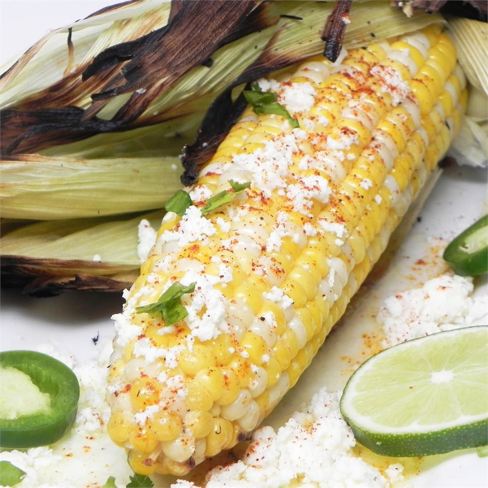

Yummy cotija cheese sprinkled over corn, best served with lime!
A traditional Mexican street vendor food, elote (el-oh-tay) is well-known and beloved by many people, not only by those
of Hispanic descent!
Ingredients:
- 4 ears corn, shucked
- ¼ cup melted butter
- ¼ cup mayonnaise
- ½ cup grated cotija cheese
- 4 wedges of lime (optional, but highly suggested!)
Instructions:
- Preheat grill to medium-high heat.
- Grill corn until hot and lightly charred all over (~7 to 10 minutes).
- Roll the ears in melted butter, then spread evenly with mayonnaise.
- Sprinkle with cotija cheese and serve with a lime wedge.
- Enjoy!
Return to top
Return to main page